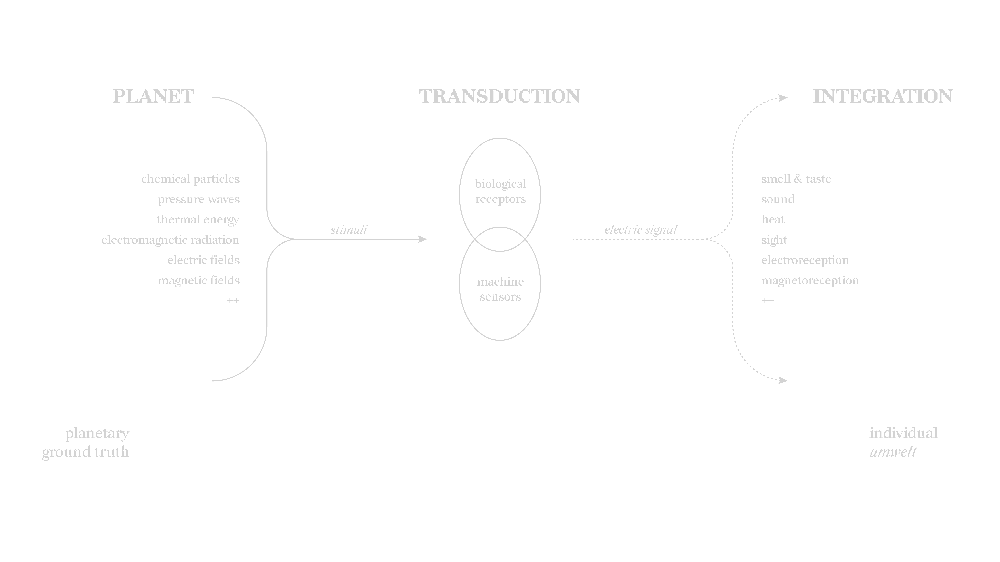
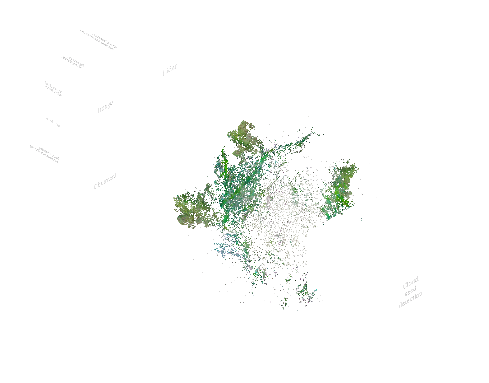

The imaging process of the Event Horizon Telescope is no different to how we see: photoreceptors absorb electromagnetic radiation and trigger electrical signals along neurons, beyond which higher levels of processing assemble the complete image. The transformation from one signal to another is called transduction, which describes both the processes by which we see, hear, smell—but also what machine sensors do.

We are all plugged into a limited bandwidth of a planetary ground truth of various forms of radiation, vibration, and energy, yet integrate the stimuli into a cohesive umwelt. What if this sensory integration took place beyond the scale of the individual organism, at the scale of the entire planet? Enter the Whole Earth Codec, an autoregressive foundation model trained across multiple modalities, which enables interoperability between disparate forms of data and allows an expansive planetary intelligence to emerge.

Data
The Codec ingests broad spectrum data across modalities. The distributed network of its mesh observatory consists of different sensors receiving different types of stimuli: image, audio, chemical, lidar, pressure, moisture, magnetic fields, etc. What forms of data are produced are just as broad as the forms of sensing. The data stream from an individual sensor consists of measurements taken at a modality-relevant sampling rate, e.g. twenty times a second for earthquake seismometers, once every thirty minutes for common AQI sensors. The rate can also differ between sensors within the same modality, such as a microphone attuned to birdsong at 44 kHz versus one for turtles at 24 kHz. Regardless of modality, a UTC timestamp and GPS satellite signal is attached to each sample. This anchoring allows the model to make associations based on temporal and spatial correlation across disparate modalities.
Pre-training
Foundation models are pre-trained on a massive corpus of unsupervised data, and the Whole Earth Codec is no different. In data streams of sequential samples, the tokenization method is apparent: the data from these sensors are batched into an aggregated document and each sample from its stream of measurements is a single token. Other forms of non-sequential data require different tokenization techniques, such as images broken into pixels and sequenced in raster order.
To handle multimodal input, separate encoders are trained for each type of data. These encoders transform disparate forms of input into dense, high-dimensional embeddings within a single, massive cross-modal latent space. The model is trained to project temporally and spatially correlated forms of data into nearby embeddings within the space. Decoders of different modalities are then trained by translating the latent space embeddings into sequence predictions. Due to the massive scale of information, the model only makes a single pass over available data. As new data is gathered and aggregated, the model can simply continue training and updating weights.
Privacy
The distributed sensing network from which the Whole Earth Codec observes the planet is privy to vast amounts of data, yet sensitive information is protected through structured transparency. Input privacy refers to the ability to process information that is hidden from you and to allow others to process your information without revealing it to them, while output privacy refers to the ability to read the output of an information flow without being able to reverse-engineer further information about the input. Through federated learning, data from the mesh observatory is processed in local servers within a secure enclave, communicating weights rather than data to the coordinating server containing the main foundation model. This maintains the input privacy of all data ingested by the model. For particularly sensitive information, adding noise to each datapoint preserves output privacy without impacting overall learned predictions; this technique is known as differential privacy. The sum of privacy-enhancing technologies deployed entails a trustless paradigm for training the Whole Earth Codec. Traditional relations of opacity/transparency and antagonism/mutualism are complicated by mutually assured observation.
Governance
Sovereignty is derived from this technology, but its implementation spreads from the bottom up; the Whole Earth Codec cannot be owned by any one entity. The mesh observatory is a conglomerate of public and private sensors, networked together by organizations ranging from government institutions to research universities to individual landowners. Much like the Internet Engineering Task Force, the standards and protocols of the Whole Earth Codec are maintained by a supra-national body and proposed, developed, and reviewed in an open process. They maintain interoperable protocols for training and deploying the foundation model, governing processes including data transmission, federation, and weight aggregation.
Capabilities
By integrating myriad channels of sensing data into a shared latent space, the Whole Earth Codec can make emergent associations between a multiplicity of temporal and spatial scales. Unmoored from the umwelt of any single organism, its sensorium is privy to an amalgamated landscape of previously indiscernible relations. Through the same abrupt specific capability scaling prevalent in LLMs, task performance sharply improves as the size of the training corpus expands; this motivates the Codec as a planetary project rather than a fragmented one.
Leveraging the pre-trained baseline, fine-tuning uses a smaller, labeled dataset to update model weights, often for specific capabilities or to address domain shift. The Codec forms the substrate for a rich ecosystem of third-party, fine-tuned models with improved performance on downstream tasks. Within the ecosystem, there are fine-tuned models developed by an economy of research universities and private startups, available open-source or through pay-to-play APIs. Openly available models proliferate in everyday use among climate-minded hobbyists, but industries such as insurance will pay a premium for high-performance proprietary software.